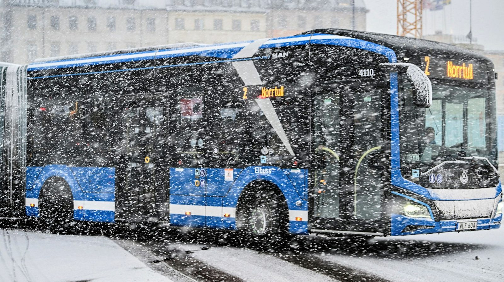
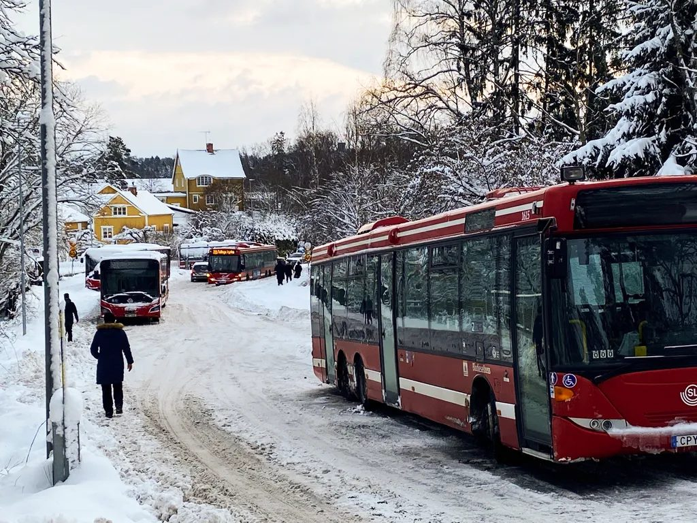
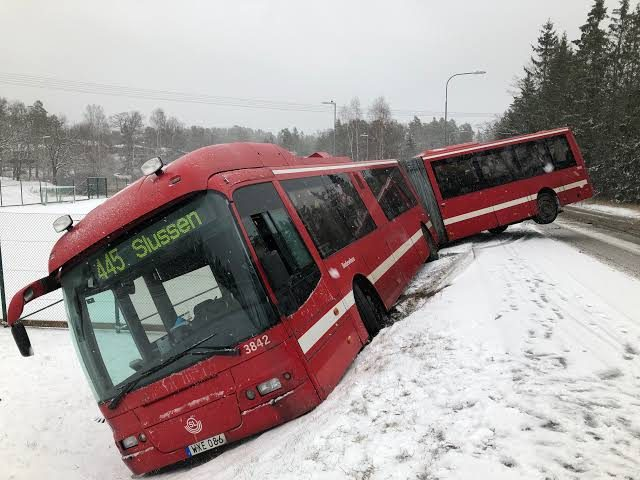
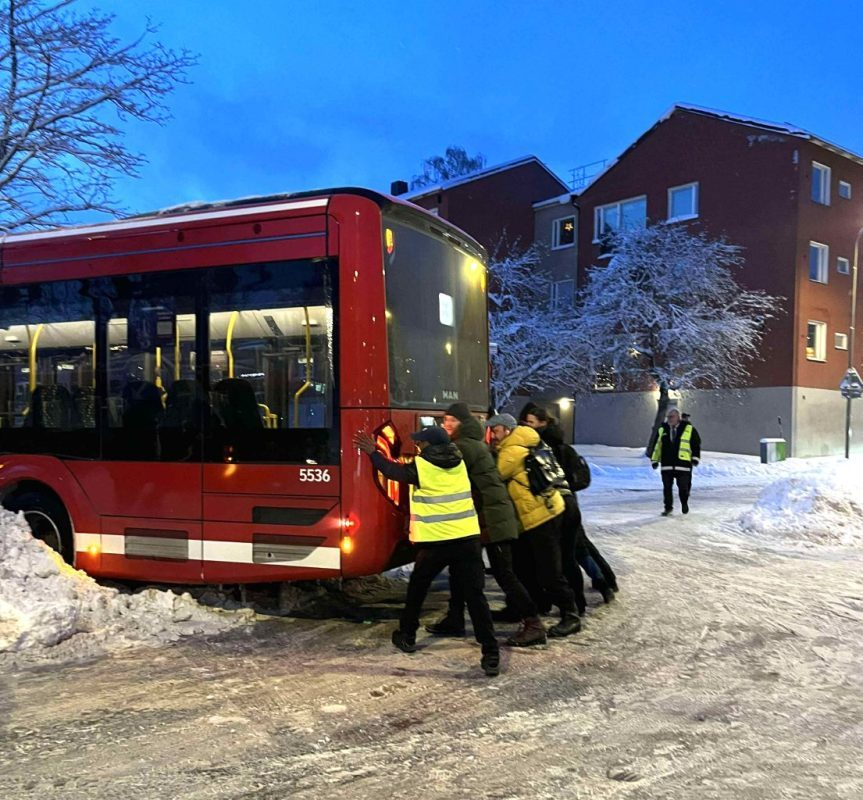
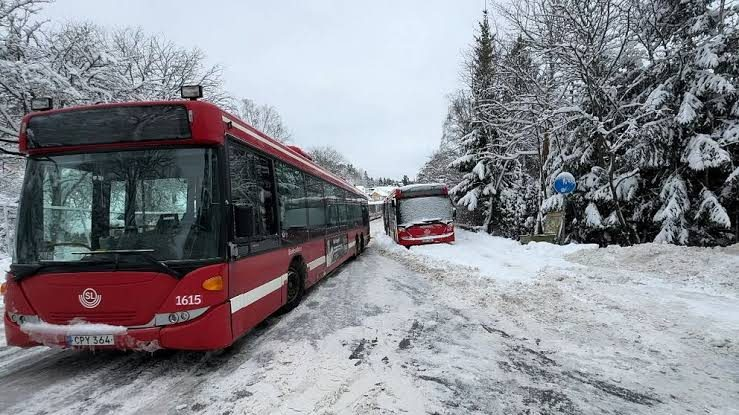
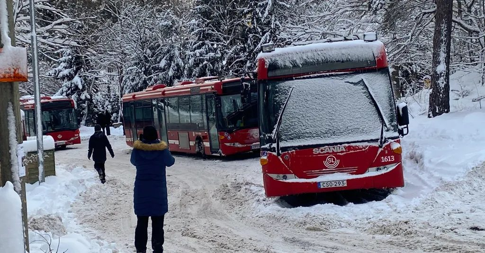
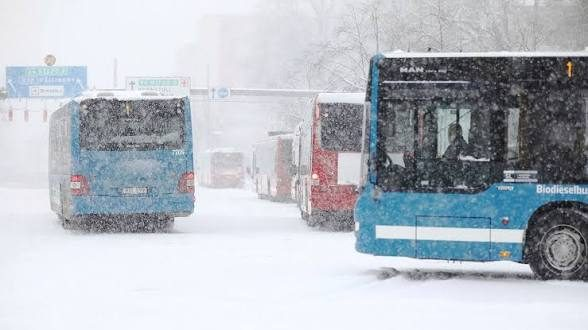

Skolkatalog 28/30
Olovslundsskolan
Busskolan
Vällingbyskolan
Parodi · ej officiell skolkatalog
Skolkatalog 28/30
Det här är ingen vanlig skolkatalog
Det är en parodi. I stället för klassfoton visar varje klass en buss. Om förslaget går igenom flyttar Olovslundsskolan till en paviljong i Vällingby, och de yngsta eleverna till Ålstensskolan. Då blir bussen en del av skoldagen för många barn.
Vad kommunen säger
Sammanfattning av föräldrarnas anteckningar från mötet med förvaltningen och rektor.
- Varför evakuering?Ett föreläggande från miljöförvaltningen 2017 om bristande ventilation, och tekniska installationer som nått slutet av sin livslängd. En planerad utbyggnad stoppades på grund av minskande elevkullar, och ett nytt inriktningsbeslut togs i juni 2025.
- FörslagetEnligt förvaltningen finns ingen enskild skola i Bromma som kan ta emot alla elever. Den stora paviljongen i Vällingby, plus Ålstensskolan för de yngre eleverna, beskrivs som den enda tillgängliga lösningen.
- Varför inte en paviljong i närområdet?Föräldrar har frågat varför man inte bygger en lokal paviljong och lånar specialsalar på skolor i närheten. Svaret: skolan kan inte evakueras delvis eftersom ventilationen inte går att stänga av i sektioner, och schemat för lärarna blir ohållbart över för många enheter. Rektor delar den bedömningen.
- Var är underlaget?Föräldrar har bett om underlag som visar varför andra lösningar och tomter valts bort. Förvaltningen medger att det finns väldigt lite dokumentation, eftersom bedömningarna görs löpande av handläggare innan tjänsteutlåtandet skrivs.
Skriv under protestlistanStoppa evakueringen av Olovslundsskolan till Vällingbyskolan
Testa resan självMed buss från där du står till Vällingbyskolan (Google Maps)
Kontakt: olovslundsskolanforaldrar@gmail.com
Parodi. Inte utgiven av Olovslundsskolan, Stockholms stad eller SL.
Förskoleklass
Linje 2


Linje 445Årskurs 1



Årskurs 2

Linje 2
Linje 445
Årskurs 3
Årskurs 4
Linje 2
Årskurs 5
Linje 445
Årskurs 6
Bildlogg
- 1Blå elbuss, vagn 4110, linje 2 mot NorrtullAnvänds: omslag, FA, 2B, 4C · Fotograf/källa: ej angiven
- 2Blå MAN-bussar i snöoväderAnvänds: 2A, 4B · Fotograf/källa: ej angiven
- 3Orange bussar med skylten ”Bergvik”Ej använd · Fotograf/källa: ej angiven
- 4Röd Scania-buss, vagn 1615Används: 1B, 3C, 6B · Fotograf/källa: ej angiven
- 5Röd Scania-buss, vagn 1613Används: 1C, 4A · Fotograf/källa: ej angiven
- 6Stillbild ur video med ett mediehus logotypEj använd · Fotograf/källa: ej angiven
- 7Snöig väg med gula trähus och röda bussarAnvänds: FB, 3A, 5B · Fotograf/källa: ej angiven
- 8Röd buss, vagn 5536, människor som tryckerAnvänds: 1A, 3B, 6A · Fotograf/källa: ej angiven
- 9Röd ledbuss, vagn 3842, linje 445 mot SlussenAnvänds: FC, 2C, 5A · Fotograf/källa: ej angiven
- 10Omslaget 25/26, förlaga för layoutenEj använd · Fotograf/källa: ej angiven
Kontakt: olovslundsskolanforaldrar@gmail.com